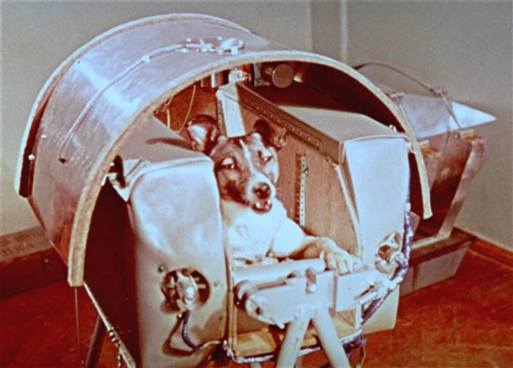
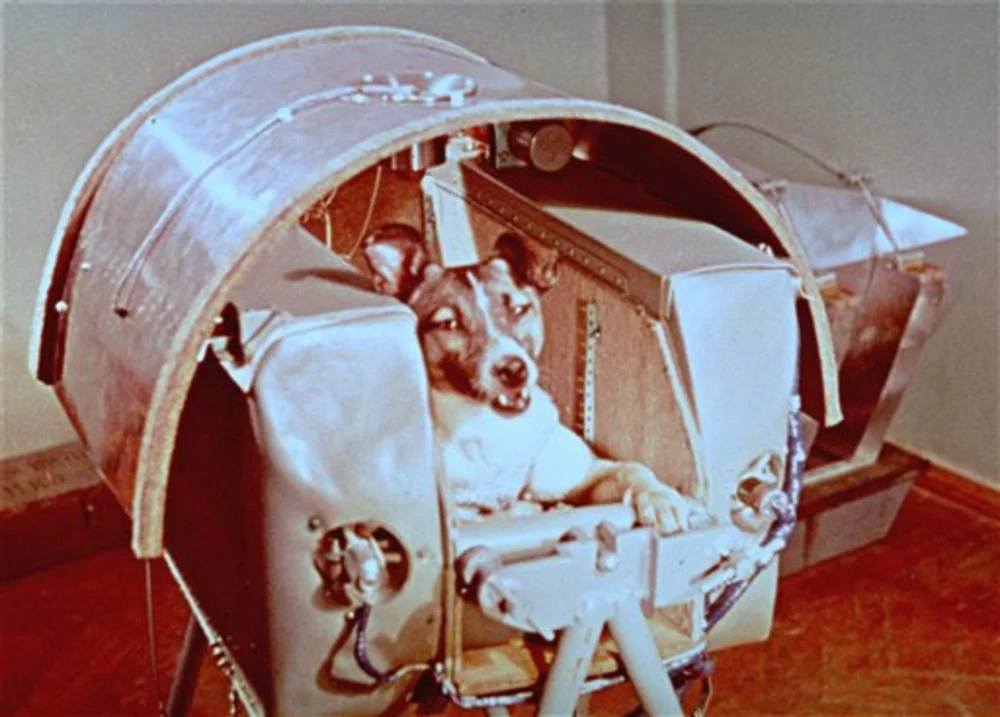

In Art
Shown through what has often been named by western scholars as propaganda, the Soviet Union’s own form of sharing visions of the future through printed media such as newspapers, magazines, posters, and books as well as cartoons and film/television. One of such magazines dedicated to Soviet futurism among was Техника Молодежи, or Technology of The Youth/For Youth, which one could take as the technology to be inherited and developed by newer generations.
 Here on the left-side we have an early post-war illustration in a softer version of Socialist realism, showing national pride through the use of a govermnet parade. We can also see flying cars in a similar design to helicopters as the main focus. We can infer from the Soviet Red Army's status in engineering and airspace war use how such depictions of tech advancments would spark an interests in the early mid-century.
Here on the left-side we have an early post-war illustration in a softer version of Socialist realism, showing national pride through the use of a govermnet parade. We can also see flying cars in a similar design to helicopters as the main focus. We can infer from the Soviet Red Army's status in engineering and airspace war use how such depictions of tech advancments would spark an interests in the early mid-century.
 Here on the right-side is a later image from a 1972 issue, dipicting a flying bus! What we can also see in the background is some more contemporary buildings, highlighting the development of city infustructer throughout the Soviet Union at the time.
Here on the right-side is a later image from a 1972 issue, dipicting a flying bus! What we can also see in the background is some more contemporary buildings, highlighting the development of city infustructer throughout the Soviet Union at the time.
Aside from publications, independent artists’ visions were also spotlighted by the state and in citizen made culture. One such artists was Gennady G. Golobokov, who was credited for creating psychological fiction in Soviet futurism. As a teenager Golobokov suffered from a spinal injury leaving him paralyzed, causing him to create his own process from his laying down position. This process included light pressure strokes and erasings and painting the top pieces of his canvases upside down as he couldn’t reach them from the traditional perspective.
Here are some of my favorites of Golobokov’s art depicting future technology and life. More can be found in this digital gallery. Or you can click on the images to see them in the digital gallery.

Soviet architecture would evolve to fill the futuristic visuals and goals, notably in the constructivist and brutalist styles that often showed uniformity and smooth shapes in exterior design.
Examples of real and illustrated arc here
In Values
As the Soviet Union’s system was based in socialism with the goal of eventual communism, we would see such ideas be expressed in their art with the message being uniformly fit in with such utopian ideals.
In Technology
The Soviet Union took great pride in their advancements towards space travel. Add in some details of the space race and stories here
Notably, the first person to orbit was Yuri Gagarin. Before Gararin, the Soviets practiced with many dogs who lost their lives for humanity to understand how to survive the journey to and from outer space. Many people at the time and still now criticize the use of animal testing for a project that as an abstract is very unnecessary for human needs, but the soviets and other countries still carried on. Further, these dogs, the most famous of them and their images, were expressed to be heroes for humanity’s step forward to such imaginings of the future of space travel by their consentless sacrifices.
 Infamously was the tragic story of Laika. In 1958, Laika, the first dog in space unfortunately died due to overheating after about 6 hours in orbit that was originally planned to last a week. The launch was planned without an expected return on account of the spacecraft missing proper landing construction and the scientist, Yazdovsky’s prelaunch final evening for Laika at his home with his children to offer kindness or comfort.

Infamously was the tragic story of Laika. In 1958, Laika, the first dog in space unfortunately died due to overheating after about 6 hours in orbit that was originally planned to last a week. The launch was planned without an expected return on account of the spacecraft missing proper landing construction and the scientist, Yazdovsky’s prelaunch final evening for Laika at his home with his children to offer kindness or comfort.

 Another sad part to this story was that Mukha, pictured here, was almost picked to be the first dog to orbit, passing the same trials as Laika. But was reportedly not picked due to not being as photogenic for publicity.
Another sad part to this story was that Mukha, pictured here, was almost picked to be the first dog to orbit, passing the same trials as Laika. But was reportedly not picked due to not being as photogenic for publicity.
Following Laika’s launch was Belka and Strelka who spent a day in space and came back home safely as the first beings brought back alive. Their survival stretch to now, both in leading a path towards human space travel and in national pride.

More information on the Soviet Space Dogs can be found at At the Russian Yuri Gagarin Museum-Reserve Website!
Info on space posters here
info on robots and terms here